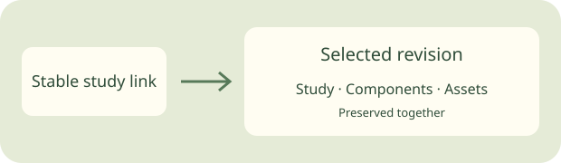

Abbie’s World · working study
More time exploring.
Less time shipping.
A study can reuse game components without rebuilding the whole game. This page is also the test specimen for that publishing flow.

A real shared component
The controls call the game’s existing scene information manifest module, copied from the recorded source commit. This is an integration test, not a playable game or final game art.
What this standard does
- Publishes a selected bundle without a Vercel game build.
- Keeps old revisions and their assets unchanged.
- Promotes a selected revision only if the current revision still matches the operator’s expectation.
- Rolls back by selecting a previous bundle.
- Keeps notes in the existing signed-in feedback service, attached to the reviewed revision.
What still requires a game release
New server APIs and accepted changes integrated into the live game use the normal deployment and game-readiness checks. A published study does not pass those gates by itself.
Evidence and limits
The old preview route was verified in a browser. Eight successful runs on October 24 took 2:49–4:11; one spent 95 seconds checking out the repository and 67 seconds syncing all previews. The new publisher fetches selected files and never syncs other studies.
This implementation is a Draft. Publication, promotion, rollback, phone presentation, authenticated note readback and fresh MCP capture must all be recorded in the existing study standard before it is called proven. No Oracle consultation is claimed.
Sources
R2 atomic conditional writes · Vercel static and prebuilt deployments · GitHub concurrency